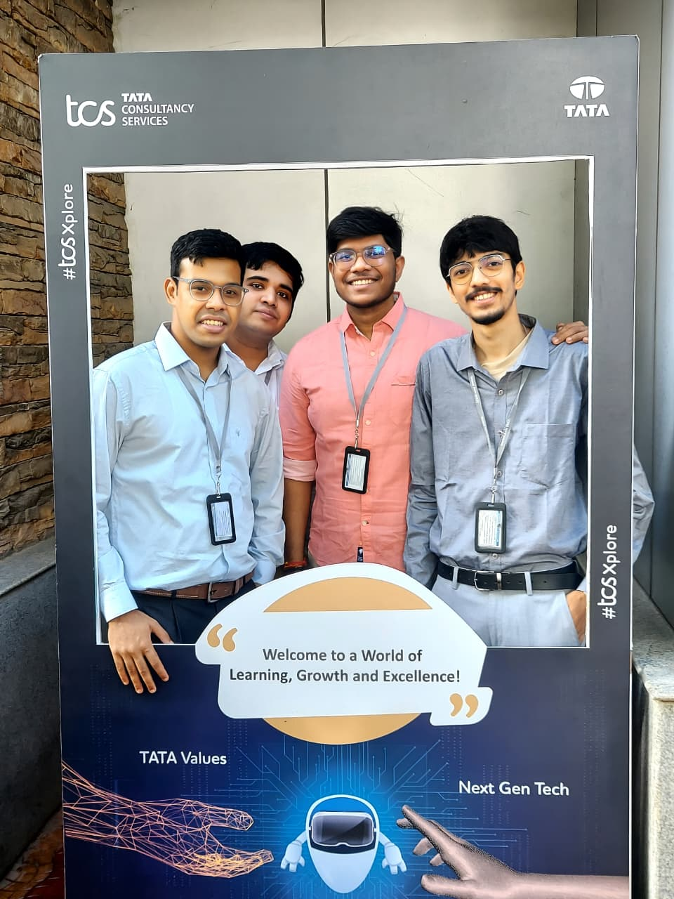

Recently, I had the incredible opportunity to visit the Tata Consultancy Services (TCS) Bangalore campus, and the experience was nothing short of inspiring. Known as one of India’s leading IT giants, TCS has always represented excellence, innovation, and global impact — but seeing it up close added an entirely new perspective.
From the moment I entered the campus, I was struck by the vibrant atmosphere and the seamless blend of professionalism and creativity that defined every corner. The workplace buzzed with collaboration — teams brainstorming ideas, engineers solving real-world problems, and innovators turning complex challenges into scalable solutions. It was fascinating to witness how TCS fosters an environment that empowers individuals to think beyond boundaries and work together to bring meaningful change through technology.
During my visit, I gained insights into the company’s diverse range of projects — from digital transformation and AI-driven analytics to cloud computing and sustainable tech initiatives. What impressed me most was the culture of continuous learning that permeated the organization. TCS doesn’t just build technology; it builds people. Every employee I interacted with radiated enthusiasm and pride in contributing to something greater than themselves.
Another aspect that stood out was the vibrant workplace culture. The balance between structure and freedom encouraged innovation at every level. The open discussions, knowledge-sharing sessions, and inclusive work environment reflected TCS’s commitment to nurturing both technical and human potential.
This experience reminded me why I’m so passionate about pursuing a career in technology — it’s not just about coding or software, but about solving problems that make life better. Visiting TCS gave me a real-world glimpse into how vision, teamwork, and innovation come together to shape the future.
I left the campus deeply motivated, filled with new ideas, and excited for the journey ahead — a journey where I hope to contribute to the same spirit of excellence and innovation that defines TCS.
#TCS #Bangalore #Innovation #Technology #CareerJourney #Inspiration
Leave a Reply